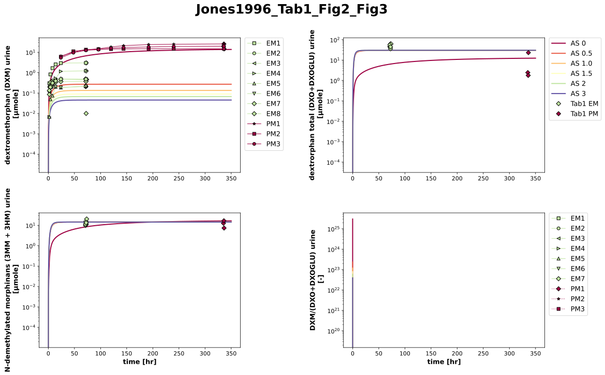

Overview
Models
| model | source |
|---|---|
| model | dextromethorphan_body_flat.xml |
Datasets
Figures (1)


Code
"""Simulation experiment of the study Jones1996."""
from itertools import cycle
from typing import ClassVar, override
import numpy as np
from pkpdsim.metadata import Coadministration, Dosing, Fasting, Health, Route, Tissue
from sbmlsim import Q
from sbmlsim.data import DataSet
from sbmlsim.fit import FitData, FitMapping
from sbmlsim.plot import Axis, Figure
from sbmlsim.simulation import Simulation
from sbmlsim.units import Quantity
from pkdb_models.models.dextromethorphan import MODEL
from pkdb_models.models.dextromethorphan.experiments.base_experiment import (
DexSimulationExperiment,
jitter,
)
from pkdb_models.models.dextromethorphan.experiments.figure_templates import (
hide_xaxis_label,
)
from pkdb_models.models.dextromethorphan.experiments.genotype_phenotype import (
GenotypeStyle,
MetabolicPhenotype,
)
from pkdb_models.models.dextromethorphan.fitting.mapping_collections import (
DexMappingMetaData,
)
class Jones1996(DexSimulationExperiment):
"""Simulation experiment of Jones1996.
A single oral dose of 30 mg dextromethorphan hydrobromide as cough syrup
(Benylin DM), which the publication states as 23.16 mg or 85.47 µmole of
the base (the anhydrous salt, not the monohydrate of the base of the
experiments), to healthy subjects phenotyped by the urinary metabolic
ratio (cutoff 0.3): 9 extensive metabolizers (EM) were dosed, 8 are in the
urinary data (one was excluded for a recovery below 40 %, an incomplete
collection), and 3 poor metabolizers (PM). Urine over 72 hr (EM) and 14
days (PM); dextromethorphan, dextrorphan, 3-methoxymorphinan and
3-hydroxymorphinan after a hydrolysis with beta-glucuronidase, i.e. the
dextrorphan is the total dextrorphan and the sum of 3-methoxymorphinan and
3-hydroxymorphinan the N-demethylated morphinans of the model. Fasting is
not reported. The treatment phases with erythromycin and rifampin
(Fig4, Fig5) are not simulated.
The phenotypes are simulated with the activity scores 0 (PM) and 2 (EM),
the genotypes are not reported. The syrup is simulated with the
dissolution of the model (a fit parameter, which a study does not change).
The data of one subject are in several sources: the dextromethorphan of
Tab1 is the end point of the cumulative excretion of Fig2, and the
metabolic ratio of the poor metabolizers is drawn twice in Fig3, over
72 hr (panel B) and over 14 days (panel D). Panel D agrees with the
amounts of Tab1 (DXM/DXO 8.0, 14.3 and 0.63 at 14 days), panel B does not
(0.9 to 2.0 at 72 hr in B against 0.54, 5.3 and 8.1 on day 3 in D), so the
PM curves of panel B are outliers. The curves of Fig2 and Fig3 are numbered in the
order of the plot, not by the subjects of Tab1.
"""
activity_scores: ClassVar[list[float]] = [0, 0.5, 1.0, 1.5, 2, 3]
phenotype_activity_score: ClassVar[dict[str, float]] = {"em": 2, "pm": 0}
#: the dose of the base, as stated by the publication (23.16 mg = 85.47 µmole)
dose_dxm: ClassVar[Quantity] = Q(23.16, "mg")
#: the analytes of Tab1 by the key of their dataset
tab1_substances: ClassVar[dict[str, list[str]]] = {
"dxm": ["dextromethorphan"],
"dxo_total": ["dtf+dtfglu"],
# the N-demethylated morphinans of the model, 3MM + 3HM (with conjugates)
"mm": ["3-methoxymorphinan", "hm3+hm3glu"],
}
#: the observable of a dataset of Tab1 by its key
tab1_observables: ClassVar[dict[str, str]] = {
"dxm": "Aurine_dxm",
"dxo_total": "Aurine_dxo_total",
"mm": "Aurine_mm",
}
#: phenotype of the curves of Fig2 and Fig3 by curve, set by `datasets`
fig2_subjects: dict[str, str]
fig3_subjects: dict[str, str]
@staticmethod
def subject_key(individual: str) -> str:
"""Get the key of a curve of a figure, e.g. `em1` of `fig2_dex_em1`."""
return individual.rsplit("_", 1)[-1]
@override
def datasets(self) -> dict[str, DataSet]:
dsets = {}
self.fig2_subjects = {}
self.fig3_subjects = {}
# Tab1: cumulative amounts per subject at 72 hr (EM) and 14 days (PM)
df = self.load_dataframe("Tab1", na_values=["na"])
df = df[df["measurement"] == "cumulative amount"]
for key, substances in self.tab1_substances.items():
# the sum of the analytes by subject
df_key = (
df[df["substance"].isin(substances)]
.groupby(["id", "group", "time", "time_unit", "unit"])["value"]
.sum(min_count=len(substances))
.reset_index()
)
for group, df_group in df_key.groupby("group"):
df_group = df_group.copy()
df_group["count"] = 1
df_group["time_jitter"] = jitter(df_group["time"], 0.02)
df_group["time_jitter_unit"] = df_group["time_unit"]
dsets[self.to_sid(f"Tab1_{key}_{group}")] = DataSet.from_df(
df_group, self.ureg
)
# Fig2: recovery [percent of dose] to urinary amount [micromole]
factor = (self.dose_dxm / (Q(100, "count") * self.Mr.dxm)).to("micromole")
df = self.load_dataframe("Fig2", na_values=["na"])
df = df[df["substance"] == "dextromethorphan"]
for (individual, phenotype), df_subset in df.groupby(
["individual", "phenotype"]
):
subject = self.subject_key(str(individual))
self.fig2_subjects[subject] = str(phenotype)
df_subset = df_subset.copy()
df_subset["value"] = df_subset["value"] * factor.m
df_subset["unit"] = str(factor.u)
dsets[self.to_sid(f"Fig2_dxm_{subject}")] = DataSet.from_df(
df_subset, self.ureg
)
# Fig3: cumulative metabolic ratio DXM/(DXO+DXOGLU), panels B and D
df = self.load_dataframe("Fig3", na_values=["na"])
df = df[df["substance"] == "(dmt)/(dtf+dtfglu)"]
for (label, individual, phenotype), df_subset in df.groupby(
["label", "individual", "phenotype"]
):
subject = self.subject_key(str(individual))
self.fig3_subjects[subject] = str(phenotype)
suffix = "_day" if str(label).endswith("_day") else ""
dsets[self.to_sid(f"Fig3_mr_{subject}{suffix}")] = DataSet.from_df(
df_subset, self.ureg
)
return dsets
@override
def simulations(self) -> dict[str, Simulation]:
changes = {
**self.default_changes(),
"PODOSE_dxm": self.dose_dxm,
"LI__cyp2d6_allele1": Q(-1, "dimensionless"),
"LI__cyp2d6_allele2": Q(-1, "dimensionless"),
}
return {
self.to_sid(f"cyp2d6_activity_{activity_score}"): Simulation(
time_unit="hr",
end=350,
preinit_changes={
**changes,
"LI__cyp2d6_ac": Q(activity_score, "dimensionless"),
},
)
for activity_score in self.activity_scores
}
def task_id(self, phenotype: str) -> str:
"""Get the task of a phenotype."""
activity_score = self.phenotype_activity_score[phenotype]
return self.to_sid(f"task_cyp2d6_activity_{activity_score}")
def mapping(self, dataset: str, phenotype: str, observable: str) -> FitMapping:
"""Get the fit mapping of a dataset of the subjects of a phenotype."""
return FitMapping(
self,
reference=FitData(
self,
dataset=self.to_sid(dataset),
xid="time",
yid="value",
count=1,
),
observable=FitData(
self, task=self.task_id(phenotype), xid="time", yid=observable
),
metadata=DexMappingMetaData(
tissue=Tissue.URINE,
metabolic_phenotype=MetabolicPhenotype(phenotype.upper()),
activity_score=self.phenotype_activity_score[phenotype],
route=Route.PO,
dosing=Dosing.SINGLE,
health=Health.HEALTHY,
fasting=Fasting.NR,
coadministration=Coadministration.NONE,
),
)
@override
def fit_mappings(self) -> dict[str, FitMapping]:
mappings = {}
for phenotype in self.phenotype_activity_score:
for key, observable in self.tab1_observables.items():
dataset = f"Tab1_{key}_{phenotype}"
mappings[self.to_sid(f"fm_jones1996_{dataset}")] = self.mapping(
dataset, phenotype, observable
)
for subject, phenotype in self.fig2_subjects.items():
dataset = f"Fig2_dxm_{subject}"
mappings[self.to_sid(f"fm_jones1996_{dataset}")] = self.mapping(
dataset, phenotype, "Aurine_dxm"
)
for subject, phenotype in self.fig3_subjects.items():
for suffix in ["", "_day"] if phenotype == "pm" else [""]:
dataset = f"Fig3_mr_{subject}{suffix}"
mappings[self.to_sid(f"fm_jones1996_{dataset}")] = self.mapping(
dataset, phenotype, "dxm_dxo_total_urine"
)
return mappings
@override
def figures(self) -> dict[str, Figure]:
# filled markers, which show the color of the phenotype
markers = ["s", "o", "<", ">", "^", "v", "D", "d", "*"]
gstyle = GenotypeStyle(
activities=np.array([self.activity_scores[0], self.activity_scores[-1]])
)
fig = Figure(
experiment=self,
sid="Tab1___Fig2___Fig3_",
name=f"{self.sid}_Tab1_Fig2_Fig3",
num_rows=2,
num_cols=2,
)
plots = fig.create_plots(xaxis=Axis("time", unit=self.unit_time), legend=True)
plots[0].set_yaxis(self.label_dxm_ur, unit=self.unit_dxm_ur, scale="log")
plots[1].set_yaxis(
self.label_dxo_total_ur, unit=self.unit_dxo_total_ur, scale="log"
)
plots[2].set_yaxis(self.label_mm_ur, unit=self.unit_mm_ur, scale="log")
plots[3].set_yaxis(self.label_mrtot_urine, unit=self.unit_dimless, scale="log")
hide_xaxis_label(plots[0])
hide_xaxis_label(plots[1])
observables = [
"Aurine_dxm",
"Aurine_dxo_total",
"Aurine_mm",
"dxm_dxo_total_urine",
]
# simulations
for activity_score in self.activity_scores:
for n, observable in enumerate(observables):
plots[n].add_data(
task=self.to_sid(f"task_cyp2d6_activity_{activity_score}"),
xid="time",
yid=observable,
color=gstyle.color(activity_score),
label=f"AS {activity_score}" if n == 1 else None,
)
# Tab1: the amounts at the end of the collection
for n, key in enumerate(self.tab1_substances):
for phenotype, activity_score in self.phenotype_activity_score.items():
plots[n].add_data(
dataset=self.to_sid(f"Tab1_{key}_{phenotype}"),
xid="time_jitter",
yid="value",
single_lines=True,
linestyle="",
marker="D",
label=f"Tab1 {phenotype.upper()}" if n == 1 else None,
color=gstyle.color(activity_score),
)
# Fig2: the cumulative urinary dextromethorphan
iter_markers = cycle(markers)
for subject, phenotype in self.fig2_subjects.items():
plots[0].add_data(
dataset=self.to_sid(f"Fig2_dxm_{subject}"),
xid="time",
yid="value",
single_lines=True,
linestyle="-",
label=subject.upper(),
marker=next(iter_markers),
color=gstyle.color(self.phenotype_activity_score[phenotype]),
)
# Fig3: the cumulative urinary metabolic ratio, the PM curves of
# panel B (dotted) are outliers, those of panel D are not
iter_markers = cycle(markers)
for subject, phenotype in self.fig3_subjects.items():
marker = next(iter_markers)
color = gstyle.color(self.phenotype_activity_score[phenotype])
plots[3].add_data(
dataset=self.to_sid(f"Fig3_mr_{subject}"),
xid="time",
yid="value",
single_lines=True,
label=subject.upper(),
marker=marker,
linestyle=":" if phenotype == "pm" else "-",
color=color,
)
if phenotype == "pm":
plots[3].add_data(
dataset=self.to_sid(f"Fig3_mr_{subject}_day"),
xid="time",
yid="value",
single_lines=True,
linestyle="-",
label=None,
marker=marker,
color=color,
)
return {
"tab1fig2fig3": fig,
}
if __name__ == "__main__":
MODEL.run_experiments(Jones1996, output_dir="test", save_results=True)